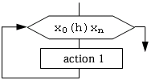
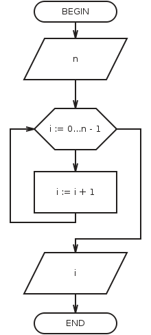

Loop with parameter, or loop with counter, or arithmetic loop is a loop with a known quantity of repetitions before. You should write law of changing the parameter variable in the block of modification.

Xo is the initial value of the parameter;
h is a step;
Xn is the final value of the parameter.
You should use rules for creating loops with parameter:
1. Loop parameter, the initial and the final value of the parameter and a step must be the same type;
2. You must not change the initial, the current and the final value of the parameter inside of loop;
3. You must not go into loop directly without the block of modification;
4. If the initial value is greater, than the final, then a step is negative number;
5. If to go away from loop, then variable for the value of the parameter is random and can not not be used in further calculations;
6. If to go away from loop without completing FOR loop, then variable for the value of the parameter retains your the last value.
Counting the number (picture from the program):
